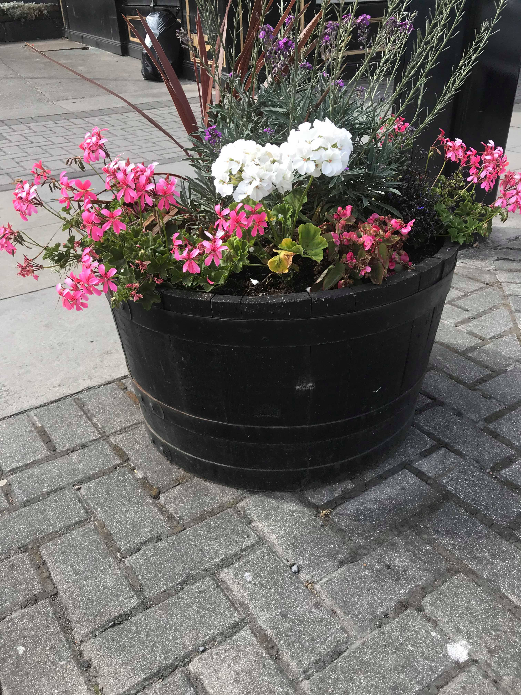

My photography style
I have a unique photography style. I love taking pictures of nature, sports and wildlife. In my pictures, I always try to tell a story and I try to get very cool angles that will bring out the full quality of the image. I love doing close-ups and capturing the smaller beautiful parts of nature that may get overlooked, but on closer inspection they are extremely beautiful and mesmerising